2-1-OSI模型与TCP协议
学习目标
- 掌握OSI七层模型
- 掌握TCP/IP协议
- 掌握linux配置动态、静态IP
- 掌握Linux查看、管理网络信息。
OSI七层模型是什么
开放系统互联（Open System Interconnection，缩写：OSI）是一种概念模型，由国际标准化组织提出，一个试图使各种计算机在世界范围内互连为网络的标准框架。
为什么要发布这个标准呢？
其实就是推荐所有公司使用这个标准，生产硬件、软件都按照这个来，这样大家的通信方式是一样的，能够互相发送、接收信息等操作，有利于各不同制造厂家的设备互联。
比如大家通常都使用两头或三头的插座，而你偏偏制作了四头的插头，结果谁也用不了，那你还怎么跟大家玩 。
OSI到底是什么呢？
OSI模型是一个具有七层结构的模型，它将计算机网络体系结构划分为 7应用层、6表示层、5会话层、4传输层、3网络层、2数据链路层、1物理层。
每一层都去实现不同的功能，每一层的功能都以协议形式正规描述，协议定义了某层同远方一个对等层通信所使用的一套规格和约定。
OSI参考模型中，最基本的一个知识点：每一层都是向其上一层提供服务的。

超哥用一个简单的例子，大家理解这个抽象的概念就好。
应用层
应用层是面向用户的，也就是说超哥使用的微信、QQ、以及撩国外妹子的Facebook，其实都属于应用层的软件，超哥看到的女神照片、视频也是应用层的数据。
应用层(application-layer）的任务是通过应用进程间的交互来完成特定网络应用。
应用层协议定义的是应用进程（进程：主机中正在运行的程序）间的通信和交互的规则。
对于不同的网络应用需要不同的应用层协议。在互联网中应用层协议很多，如域名系统 DNS，支持万维网应用的 HTTP 协议，支持电子邮件的 SMTP 协议等等。
我们把应用层交互的数据单元称为报文。
域名系统(Domain Name System缩写 DNS，Domain Name被译为域名)是因特网的一项核心服务，它作为可以将域名和IP地址相互映射的一个分布式数据库，能够使人更方便的访问互联网，而不用去记住能够被机器直接读取的IP数串。
DNS解析系统这好比我们手机上的电话簿，名字只是便于记忆，电话才是可以找到对方地址
小张 15210134321
小红 15293843845
HTTP协议
超文本传输协议（HTTP，HyperText Transfer Protocol)是互联网上应用最为广泛的一种网络协议。
所有的 WWW（万维网） 文件都必须遵守这个标准。设计 HTTP 最初的目的是为了提供一种发布和接收 HTML 页面的方法。
我们能够上网，也就是因为有TCP/IP协议，且定义了互联网传输的HTTP协议，我们才能看到琳琅满目的商品网站。
表示层
决定数据的展现（编码）形式，如同一部电影可以采样、量化、编码为RMVB、AVI，一张图片能够是JPEG、BMP、PNG等。
但是不管多么火辣的照片，对毫无感情的计算机来说，都是一串代码而已。
表示层的作用，就是计算机使用计算机的编码，把应用层的图片、声音、文字等表示出来。
表示层的常见协议有jpeg（图片的编码方式），mp3（声音的编码方式），ascii（文字的编码方式）等。
会话层
为两端通信实体建立连接（会话），中间有认证鉴权以及检查点记录（供会话意外中断的时候可以继续，类似断点续传）。
我们平时会发现一个问题，用QQ是无法分享抖音内容的，淘宝买的东西也是不能用微信支付的，在这里就是淘宝app和微信app之间因为竞争关系，人为的禁止互通的原因。
其实淘宝和微信，都在Internet上，从网络角度来看是可以互通的，只是从软件的设计上，禁止了互通。
从另个角度，用qq号可以登录腾讯系的所有游戏，用支付宝账号也可以登录阿里系的所有产品。
所以会话层的作用也就是一句话，两个应用是否能对接。
传输层
将一个数据/文件斩件分成很多小段，标记顺序以被对端接收后可以按顺序重组数据，另外标记该应用程序使用的端口号。
不同的应用程序使用不同计算机的端口号，同样的应用程序需要使用一样的端口号才能正常通信。
上三层的重点在app开发，从传输层开始，重点就在网络通信了。
传输层有两个作用，首选会根据情况，选择跑的傻快但可能丢包的udp协议，或者跑的有点慢但是特别稳不丢包的tcp。
如果超哥在网页上查看女神的照片，那么照片是个文件，文件在传输的时候如果有部分数据丢失或出错，会导致整个文件看不到。
所以为了保证文件传输的完整性，一般会选用tcp协议，tcp会对所发的每个数据包进行确认，只有对方真的收到了，才算发送成功。
另一种情况，如果超哥和女神视频聊天，视频聊天发送的数据不是一个本来存在的固定的文件，而是边采集视频边发送，所以没有文件完整性一说，采集多少发送多少。
但是视频聊天时候对延迟要求很高，可以接受数据少量丢失，但不能接受延迟，所以这时会采用udp作为传输层协议。
传输层除了负责选择tcp还是udp，还会给数据包打上端口号。
端口号用于区分不同的应用程序
80：http协议，也就是浏览网页的数据包;
443：https协议，就是浏览安全加密的网页的数据包;
22： ssh协议，用于远程登录linux服务器的数据包；
总结：传输层的作用是选择tcp或udp连接，并且给数据打上端口号。
网络层
路由选路，选择本次通信使用的协议（http、ftp等），指定路由策略及访问控制策略。（IP地址在这一层）
经过前面的工作，超哥聊天的内容其实还没有发出去，只是经过了编码，并打上了端口号，但并没有说这个包要发往哪里。
接下来就是网络层的工作，网络层会给数据包打上ip地址，ip地址是互联网地址，类似于发快递时的收件人/发件人地址，有了这个地址，就可以远跨重洋将数据包发往全世界任何一个目的地。
经过上一节超哥的详细讲解，想必大家应该基本掌握了，一台机器是如何把数据发给另一台机器的。
有一个叫路由器的网络设备，是工作在网络层的，路由器相当于快递公司的各个节点，用来根据ip地址来转发各种各样的数据包。
总结：网络层的作用是给数据包打上ip地址，并且进行路由转发。
数据链路层
网络层的路由器用来连接各个网段，可以理解为，快递公司的大卡车负责把快递运到各个派送点，但是快递公司的大卡车并没有直接送到收件人的手里。
那么谁最终把快递包送到收件人手里呢，当然是快递小哥。
在网络通信中，有个叫交换机的设备，也是负责最终把数据包交给接收人。
交换机通过mac地址来识别各个终端（电脑、手机等），会记录下每个mac连在自己的哪个接口上，然后把数据包迅速发出。
Mac地址在电脑或手机出厂时就有了，当连接到网络中时，交换机会自动识别到。
总结：数据链路层的工作就是给数据包打上mac地址，然后交换机进行高速的交换转发。
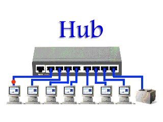
物理层
顾名思义，物理层的作用就是定义怎么用物理信号来表示数据。
比如为什么网线是8根小线组成的而不是6根，wifi的电磁波频率为什么是2.4G和5G而不是别的，这些都是ieee（电气和电子工程师协会）规定的标准，大家都按照这个来就可以了。
最后，七层模型的图，看起来就不是那么难懂了吧
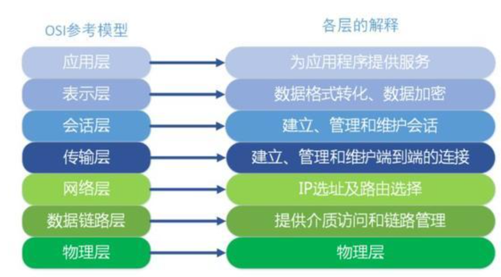
TCP/IP协议
学习网络会比较吃力，因为网络的协议本来就是抽象的，我们学习这样的知识，最好就是能具象化到生活中，用最贴近生活的认知，去转化理解。
你把网络协议想象成人与人之间的礼仪行为，不同的场合有不同的礼仪行为，人是实施不同礼仪行为的主体。
同样，网络设备是实施网络协议的主体，网络设备通过运行网络协议与其他的网络设备进行交流。
同样的道理，你的电脑想要与网络设备交流，也要与网络设备一样运行网络协议，网络协议也是一个软件，是以系统组件的方式安装在你的电脑的操作系统里的。
例如，数据包的结构，浏览一下各字段的作用就可以了，能记住就记住，记不住也没关系，你只需要先重点理解ip头部里的目的地址、源地址和tcp头部里的目的端口号、源端口号。
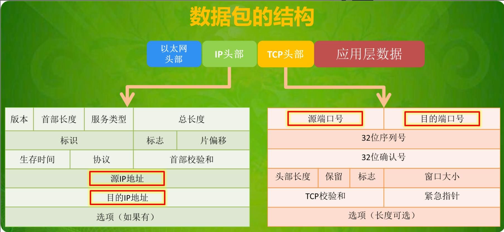
轻松理解TCP/IP协议
同样的，我们生活里要传递信息，以前还会进行邮寄，我们会填写寄信人的信息。
想象一下你写信寄信的过程，写信产生数据，寄信传递数据
标准的信件格式是要在信封上写“收信人地址”和“寄信人地址”（由此引入IP地址），“收信人地址”对应数据包里IP头部中的“目的ip地址”，“寄信人地址”对应数据包里IP头部中的“源ip地址”
写上寄信、收信两个地址就可以保证信件可以邮寄到目的地了。
但信件邮寄到目的地址后由谁来收？
从上面这封信的收件人地址检索到这个地址是沈阳大学的，沈阳大学里可能住着几万人，那你这封信是邮寄给居住沈阳大学里的那个人的？
收件人不明确，邮局就算帮你把信件送到这个地址，也没办法帮你投递到具体的收信人。
因此，我们邮件信件需要填写“收件人姓名”、“收件人地址”和“寄件人姓名”、“寄件人地址”的组合，这样才能保证信件能准确投递到具体的收件人手中。
所以我们要在信件上添加收信人姓名和寄信人姓名（由此引入端口号），这个时候收件人姓名就对应数据包里TCP协议头部中的目的端口号，寄信人姓名对应数据包里TCP协议头部中的源端口号。
我们再来对比传递信件与传递数据包的过程：
1.首先是位于南宁的李小明给沈阳的王小花过QQ发送了一条消息，李小明的电脑将此消息打包成TCP数据包发送到计算机网络中
计算机网络通过数据包中的目的IP地址把该数据包准确传递到王小花的电脑。
2.王小花的电脑收到了李小明的电脑发送过来的数据包，但是王小花的电脑上同时运行有多个程序（例如图中的QQ和微信），虽然王小花的电脑知道这个数据包是传输给它的，但是它不知道该把这个数据包中的数据交给那个程序
（就像上面讲的，信件虽然邮寄到了沈阳大学，但沈阳大学里住着那么多人，这封信上没有标示说是邮寄给谁的）。
3.针对以上的问题。如果我们使用数据包结构中的源端口号和目的端口号，根据不同的程序使用不同的端口号来发送和接受数据，这样数据包就能像邮寄信件一样准确投递到具体的电脑上指定的程序了。
例如我们指定QQ和微信使用的端口号分别是8000和8080，那么只要你的电脑接收的数据包里目的端口号是8000，那这个数据包就是传输给QQ的。
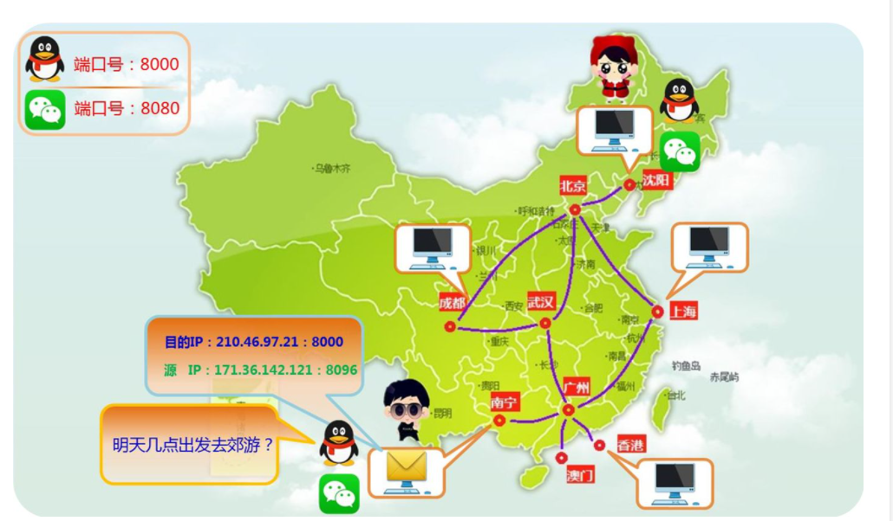
由上面的例子我们还可以引申出数据包结构中的其他字段的作用
例如我们收到信后可以简单地通过信封是否完整来检查该信件是否被别人在传输途中拆开并篡改过信件内容，那么我们怎么保证我们收到的数据包里的数据有没有在中途被别人拆开修改过呢？
数据包结构中有一个字段叫TCP校验和就是专门做这个工作的。
由数据包的字段可以看出，很多字段都有其用处，只是我们一开始学的时候没必要学的那么仔细而已。
一定要形象地理解数据包，简单的想一下，计算机网络不就是帮助我们传递信息的吗？对于邮寄信件来说，信息的载体是信纸和信封，那计算机网络中信息的载体是什么？就是各种类型的数据包啊！
数据包里有我们关心的信息，也有我们不关心的花销，我们要学的就是如何使网络按照我们的要求传递信息。
TCP/IP网络模型
由于 OSI 模型实在太复杂，提出的也只是概念理论上的分层，并没有提供具体的实现⽅案。事实上，我们
⽐较常⻅，也⽐较实⽤的是四层模型，即 TCP/IP ⽹络模型，Linux 系统正是按照这套⽹络模型来实现⽹络
协议栈的。
TCP/IP ⽹络模型共有 4 层，分别是应⽤层、传输层、⽹络层和⽹络接⼝层，每⼀层负责的职能如下：
应⽤层，负责向⽤户提供⼀组应⽤程序，⽐如 HTTP、DNS、FTP 等;
传输层，负责端到端的通信，⽐如 TCP、UDP 等；
⽹络层，负责⽹络包的封装、分⽚、路由、转发，⽐如 IP、ICMP 等；
⽹络接⼝层，负责⽹络包在物理⽹络中的传输，⽐如⽹络包的封帧、 MAC 寻址、差错检测，以及通
过⽹卡传输⽹络帧等；
TCP/IP ⽹络模型相⽐ OSI ⽹络模型简化了不少，也更加易记，它们之间的关系如下图
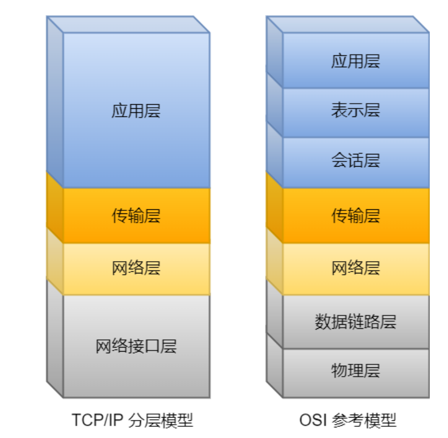
TCP/IP ⽹络参考模型共有 4 层，其中需要我们熟练掌握的是应⽤层、传输层和⽹络层，⾄于数据链路层和物理层我们只需要做简单的了解就可以了。
详解TCP/IP协议
TCP/IP 协议栈是一系列网络协议的总和，是构成网络通信的核心骨架，它定义了电子设备如何连入因特网，以及数据如何在它们之间进行传输。
TCP/IP 协议采用4层结构，分别是应用层、传输层、网络层和链路层，每一层都呼叫它的下一层所提供的协议来完成自己的需求。
由于我们大部分时间都工作在应用层，下层的事情不用我们操心；
其次网络协议体系本身就很复杂庞大，入门门槛高，因此很难搞清楚TCP/IP的工作原理，通俗一点讲就是，一个主机的数据要经过哪些过程才能发送到对方的主机上。
接下来，我们就来探索一下这个过程。
0、物理介质
物理介质就是把电脑连接起来的物理手段，常见的有光纤、双绞线，以及无线电波，它决定了电信号(0和1)的传输方式，物理介质的不同决定了电信号的传输带宽、速率、传输距离以及抗干扰性等等。
TCP/IP协议栈分为四层，每一层都由特定的协议与对方进行通信，而协议之间的通信最终都要转化为 0 和 1 的电信号，通过物理介质进行传输才能到达对方的电脑，因此物理介质是网络通信的基石。
下面我们通过一张图先来大概了解一下TCP/IP协议的基本框架：
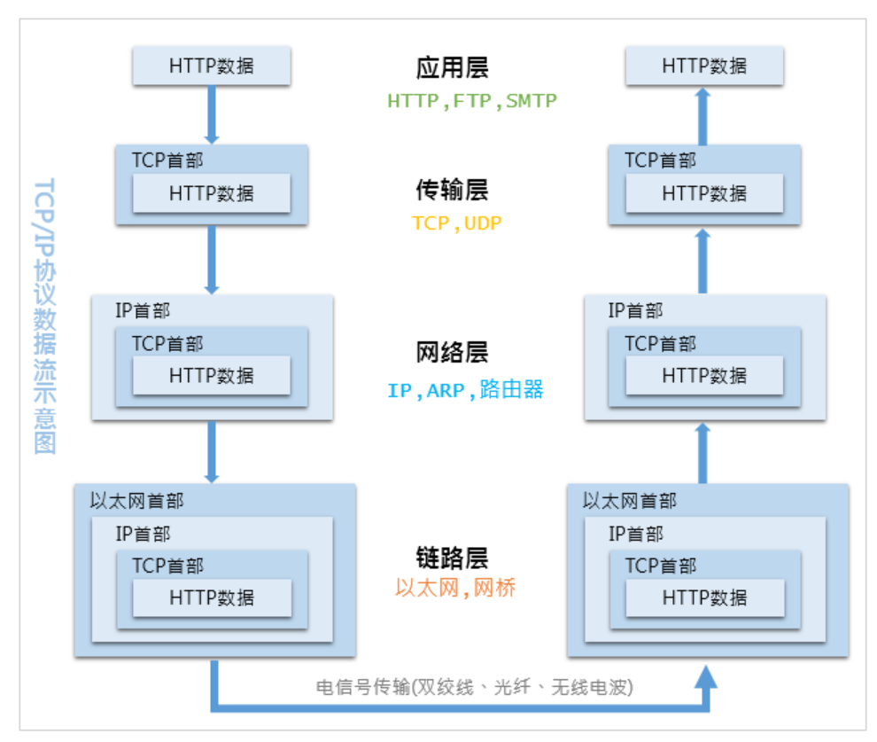
当通过http发起一个请求时，应用层、传输层、网络层和链路层的相关协议依次对该请求进行包装并携带对应的首部，最终在链路层生成以太网数据包，以太网数据包通过物理介质传输给对方主机，对方接收到数据包以后，然后再一层一层采用对应的协议进行拆包，最后把应用层数据交给应用程序处理。
网络通信就好比送快递，商品外面的一层层包裹就是各种协议，协议包含了商品信息、收货地址、收件人、联系方式等，然后还需要配送车、配送站、快递员，商品才能最终到达用户手中。
一般情况下，快递是不能直达的，需要先转发到对应的配送站，然后由配送站再进行派件。
配送车就是物理介质，配送站就是网关， 快递员就是路由器，收货地址就是IP地址，联系方式就是MAC地址。
快递员负责把包裹转发到各个配送站，配送站根据收获地址里的省市区，确认是否需要继续转发到其他配送站，当包裹到达了目标配送站以后，配送站再根据联系方式找到收件人进行派件。
有了整体概念以后，下面我们详细了解一下各层的分工。
1、链路层
网络通信就是把有特定意义的数据通过物理介质传送给对方，单纯的发送 0 和 1 是没有意义的，要传输有意义的数据，就需要以字节为单位对 0 和 1 进行分组，并且要标识好每一组电信号的信息特征，然后按照分组的顺序依次发送。
以太网规定一组电信号就是一个数据包，一个数据包被称为一帧， 制定这个规则的协议就是以太网协议。一个完整的以太网数据包如下图所示：
整个数据帧由首部、数据和尾部三部分组成，首部固定为14个字节，包含了目标MAC地址、源MAC地址和类型；
数据最短为46个字节，最长为1500个字节，如果需要传输的数据很长，就必须分割成多个帧进行发送；
尾部固定为4个字节，表示数据帧校验序列，用于确定数据包在传输过程中是否损坏。
因此，以太网协议通过对电信号进行分组并形成数据帧，然后通过物理介质把数据帧发送给接收方。
那么以太网如何来识接收方的身份呢？
以太网规协议定，接入网络的设备都必须安装网络适配器，即网卡， 数据包必须是从一块网卡传送到另一块网卡。
而网卡地址就是数据包的发送地址和接收地址，也就是帧首部所包含的MAC地址，MAC地址是每块网卡的身份标识，就如同我们身份证上的身份证号码，具有全球唯一性。
MAC地址采用十六进制标识，共6个字节， 前三个字节是厂商编号，后三个字节是网卡流水号，例如 4C-0F-6E-12-D2-19
有了MAC地址以后，以太网采用广播形式，把数据包发给该子网内所有主机，子网内每台主机在接收到这个包以后，都会读取首部里的目标MAC地址，然后和自己的MAC地址进行对比，如果相同就做下一步处理，如果不同，就丢弃这个包。
所以链路层的主要工作就是对电信号进行分组并形成具有特定意义的数据帧，然后以广播的形式通过物理介质发送给接收方。
2、网络层
对于上面的过程，有几个细节问题值得我们思考：
发送者如何知道接收者的MAC地址？
发送者如何知道接收者和自己同属一个子网？
如果接收者和自己不在同一个子网，数据包如何发给对方？
为了解决这些问题，网络层引入了三个协议，分别是IP协议、ARP协议、路由协议。
【1】IP协议
通过前面的介绍我们知道，MAC地址只与厂商有关，与所处的网络无关，所以无法通过MAC地址来判断两台主机是否属于同一个子网。
因此，网络层引入了IP协议，制定了一套新地址，使得我们能够区分两台主机是否同属一个网络，这套地址就是网络地址，也就是所谓的IP地址。
IP地址目前有两个版本，分别是IPv4和IPv6，IPv4是一个32位的地址，常采用4个十进制数字表示。IP协议将这个32位的地址分为两部分，前面部分代表网络地址，后面部分表示该主机在局域网中的地址。
由于各类地址的分法不尽相同，以C类地址192.168.24.1为例，其中前24位就是网络地址，后8位就是主机地址。
因此， 如果两个IP地址在同一个子网内，则网络地址一定相同。为了判断IP地址中的网络地址，IP协议还引入了子网掩码， IP地址和子网掩码通过按位与运算后就可以得到网络地址。
由于发送者和接收者的IP地址是已知的(应用层的协议会传入)， 因此我们只要通过子网掩码对两个IP地址进行AND运算后就能够判断双方是否在同一个子网了。
【2】ARP协议
即地址解析协议，是根据IP地址获取MAC地址的一个网络层协议。其工作原理如下：
ARP首先会发起一个请求数据包，数据包的首部包含了目标主机的IP地址，然后这个数据包会在链路层进行再次包装，生成以太网数据包，最终由以太网广播给子网内的所有主机，每一台主机都会接收到这个数据包，并取出标头里的IP地址，然后和自己的IP地址进行比较，如果相同就返回自己的MAC地址，如果不同就丢弃该数据包。
ARP接收返回消息，以此确定目标机的MAC地址；与此同时，ARP还会将返回的MAC地址与对应的IP地址存入本机ARP缓存中并保留一定时间，下次请求时直接查询ARP缓存以节约资源。
cmd输入 arp -a 就可以查询本机缓存的ARP数据。
【3】路由协议
通过ARP协议的工作原理可以发现，ARP的MAC寻址还是局限在同一个子网中，因此网络层引入了路由协议，首先通过IP协议来判断两台主机是否在同一个子网中，如果在同一个子网，就通过ARP协议查询对应的MAC地址，然后以广播的形式向该子网内的主机发送数据包；
如果不在同一个子网，以太网会将该数据包转发给本子网的网关进行路由。
网关是互联网上子网与子网之间的桥梁，所以网关会进行多次转发，最终将该数据包转发到目标IP所在的子网中，然后再通过ARP获取目标机MAC，最终也是通过广播形式将数据包发送给接收方。
而完成这个路由协议的物理设备就是路由器，在错综复杂的网络世界里，路由器扮演者交通枢纽的角色，它会根据信道情况，选择并设定路由，以最佳路径来转发数据包。
【4】IP数据包
在网络层被包装的数据包就叫IP数据包，IPv4数据包的结构如下图所示：
P数据包由首部和数据两部分组成，首部长度为20个字节，主要包含了目标IP地址和源IP地址，目标IP地址是网关路由的线索和依据；数据部分的最大长度为65515字节，理论上一个IP数据包的总长度可以达到65535个字节，而以太网数据包的最大长度是1500个字符，如果超过这个大小，就需要对IP数据包进行分割，分成多帧发送。
所以，网络层的主要工作是定义网络地址，区分网段，子网内MAC寻址，对于不同子网的数据包进行路由。
3、传输层
链路层定义了主机的身份，即MAC地址， 而网络层定义了IP地址，明确了主机所在的网段，有了这两个地址，数据包就从可以从一个主机发送到另一台主机。
但实际上数据包是从一个主机的某个应用程序发出，然后由对方主机的应用程序接收。而每台电脑都有可能同时运行着很多个应用程序，所以当数据包被发送到主机上以后，是无法确定哪个应用程序要接收这个包。
因此传输层引入了UDP协议来解决这个问题，为了给每个应用程序标识身份，UDP协议定义了端口，同一个主机上的每个应用程序都需要指定唯一的端口号，并且规定网络中传输的数据包必须加上端口信息。
这样，当数据包到达主机以后，就可以根据端口号找到对应的应用程序了。UDP定义的数据包就叫做UDP数据包，结构如下所示：
UDP数据包由首部和数据两部分组成，首部长度为8个字节，主要包括源端口和目标端口；数据最大为65527个字节，整个数据包的长度最大可达到65535个字节。
UDP协议比较简单，实现容易，但它没有确认机制， 数据包一旦发出，无法知道对方是否收到，因此可靠性较差，为了解决这个问题，提高网络可靠性，TCP协议就诞生了，TCP即传输控制协议，是一种面向连接的、可靠的、基于字节流的通信协议。
简单来说TCP就是有确认机制的UDP协议，每发出一个数据包都要求确认，如果有一个数据包丢失，就收不到确认，发送方就必须重发这个数据包。
为了保证传输的可靠性，TCP 协议在 UDP 基础之上建立了三次对话的确认机制，也就是说，在正式收发数据前，必须和对方建立可靠的连接。由于建立过程较为复杂，我们在这里做一个形象的描述：
主机A：我想发数据给你，可以么？
主机B：可以，你什么时候发？
主机A：我马上发，你接着！
经过三次对话之后，主机A才会向主机B发送正式数据，而UDP是面向非连接的协议，它不与对方建立连接，而是直接就把数据包发过去了。所以 TCP 能够保证数据包在传输过程中不被丢失，但美好的事物必然是要付出代价的，相比 UDP，TCP 实现过程复杂，消耗连接资源多，传输速度慢。
TCP 数据包和 UDP 一样，都是由首部和数据两部分组成，唯一不同的是，TCP 数据包没有长度限制，理论上可以无限长，但是为了保证网络的效率，通常 TCP 数据包的长度不会超过IP数据包的长度，以确保单个 TCP 数据包不必再分割。
总结一下，传输层的主要工作是定义端口，标识应用程序身份，实现端口到端口的通信，TCP协议可以保证数据传输的可靠性。
4、应用层
理论上讲，有了以上三层协议的支持，数据已经可以从一个主机上的应用程序传输到另一台主机的应用程序了，但此时传过来的数据是字节流，不能很好的被程序识别，操作性差。
因此，应用层定义了各种各样的协议来规范数据格式，常见的有 HTTP、FTP、SMTP 等，HTTP 是一种比较常用的应用层协议，主要用于B/S架构之间的数据通信，其报文格式如下：
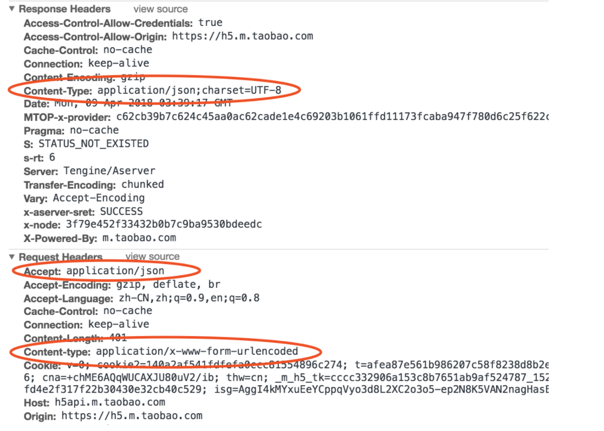
在 Resquest Headers 中，Accept 表示客户端期望接收的数据格式，而 ContentType 则表示客户端发送的数据格式；在 Response Headers 中，ContentType 表示服务端响应的数据格式，这里定义的格式，一般是和 Resquest Headers 中 Accept 定义的格式是一致的。
有了这个规范以后，服务端收到请求以后，就能正确的解析客户端发来的数据，当请求处理完以后，再按照客户端要求的格式返回，客户端收到结果后，按照服务端返回的格式进行解析。
所以应用层的主要工作就是定义数据格式并按照对应的格式解读数据。
5、全流程
首先我们梳理一下每层模型的职责：
- 链路层：对0和1进行分组，定义数据帧，确认主机的物理地址，传输数据；
- 网络层：定义IP地址，确认主机所在的网络位置，并通过IP进行MAC寻址，对外网数据包进行路由转发；
- 传输层：定义端口，确认主机上应用程序的身份，并将数据包交给对应的应用程序；
- 应用层：定义数据格式，并按照对应的格式解读数据。
然后再把每层模型的职责串联起来，用一句通俗易懂的话讲就是：
当你输入一个网址并按下回车键的时候，首先，应用层协议对该请求包做了格式定义；紧接着传输层协议加上了双方的端口号，确认了双方通信的应用程序；然后网络协议加上了双方的IP地址，确认了双方的网络位置；最后链路层协议加上了双方的MAC地址，确认了双方的物理位置，同时将数据进行分组，形成数据帧，采用广播方式，通过传输介质发送给对方主机。而对于不同网段，该数据包首先会转发给网关路由器，经过多次转发后，最终被发送到目标主机。目标机接收到数据包后，采用对应的协议，对帧数据进行组装，然后再通过一层一层的协议进行解析，最终被应用层的协议解析并交给服务器处理。
6、总结
以上内容是对TCP/IP四层模型做了简单的介绍，而实际上每一层模型都有很多协议，每个协议要做的事情也很多，但我们首先得有一个清晰的脉络结构，掌握每一层模型最基本的作用，然后再去丰富细枝末节的东西，也许会更容易理解。
TCP三次握手、四次挥手

通过前面对OSI网络模型的学习，我们知道了在网络层中可以通过IP地址实现两个机器之间的通信。
但是这并不具体，因为，真正进行通信的实体是在主机中的进程，是一个主机中的一个进程与另外一个主机中的一个进程在交换数据。
IP协议虽然能把数据报文送到目的主机，但是并没有交付给主机的具体应用进程。
而端到端的通信才应该是应用进程之间的通信。
UDP，在传送数据前不需要先建立连接，远地的主机在收到UDP报文后也不需要给出任何确认。
虽然UDP不提供可靠交付，但是正是因为这样，省去和很多的开销，使得它的速度比较快，比如一些对实时性要求较高的服务，就常常使用的是UDP。对应的应用层的协议主要有 DNS,TFTP,DHCP,SNMP,NFS 等。
TCP，提供面向连接的服务，在传送数据之前必须先建立连接，数据传送完成后要释放连接。因此TCP是一种可靠的的运输服务，但是正因为这样，不可避免的增加了许多的开销，比如确认，流量控制等。对应的应用层的协议主要有 SMTP,TELNET,HTTP,FTP 等。
常用的熟知端口号
| 应用程序 | FTP | TFTP | TELNET | SMTP | DNS | HTTP | SSH | MYSQL |
|---|---|---|---|---|---|---|---|---|
| 熟知端口 | 21,20 | 69 | 23 | 25 | 53 | 80 | 22 | 3306 |
| 传输层协议 | TCP | UDP | TCP | TCP | UDP | TCP | TCP | TCP |
TCP的概述
TCP把连接作为最基本的对象，每一条TCP连接都有两个端点，这种端点我们叫作套接字（socket），它的定义为端口号拼接到IP地址即构成了套接字，例如，若IP地址为192.3.4.16 而端口号为80，那么得到的套接字为192.3.4.16:80
TCP报文首部

源端口和目的端口，各占2个字节，分别写入源端口和目的端口；
序号，占4个字节，TCP连接中传送的字节流中的每个字节都按顺序编号。例如，一段报文的序号字段值是 301 ，而携带的数据共有100字段，显然下一个报文段（如果还有的话）的数据序号应该从401开始；
确认号，占4个字节，是期望收到对方下一个报文的第一个数据字节的序号。例如，B收到了A发送过来的报文，其序列号字段是501，而数据长度是200字节，这表明B正确的收到了A发送的到序号700为止的数据。因此，B期望收到A的下一个数据序号是701，于是B在发送给A的确认报文段中把确认号置为701；
数据偏移，占4位，它指出TCP报文的数据距离TCP报文段的起始处有多远；
保留，占6位，保留今后使用，但目前应都位0；
紧急URG，当URG=1，表明紧急指针字段有效。告诉系统此报文段中有紧急数据；
确认ACK，仅当ACK=1时，确认号字段才有效。TCP规定，在连接建立后所有报文的传输都必须把ACK置1；
推送PSH，当两个应用进程进行交互式通信时，有时在一端的应用进程希望在键入一个命令后立即就能收到对方的响应，这时候就将PSH=1；
复位RST，当RST=1，表明TCP连接中出现严重差错，必须释放连接，然后再重新建立连接；
同步SYN，在连接建立时用来同步序号。当SYN=1，ACK=0，表明是连接请求报文，若同意连接，则响应报文中应该使SYN=1，ACK=1；
终止FIN，用来释放连接。当FIN=1，表明此报文的发送方的数据已经发送完毕，并且要求释放；
窗口，占2字节，指的是通知接收方，发送本报文你需要有多大的空间来接受；
检验和，占2字节，校验首部和数据这两部分；
紧急指针，占2字节，指出本报文段中的紧急数据的字节数；
选项，长度可变，定义一些其他的可选的参数。
TCP连接的建立
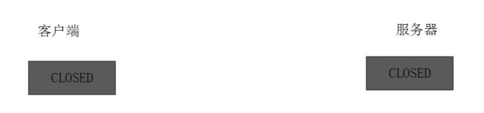
最开始的时候客户端和服务器都是处于CLOSED状态。
主动打开连接的为客户端，被动打开连接的是服务器。
你在打开小电影网站之前，你和网站是没有联系的，在你打开网页之后，你们之间就建立了TCP连接。
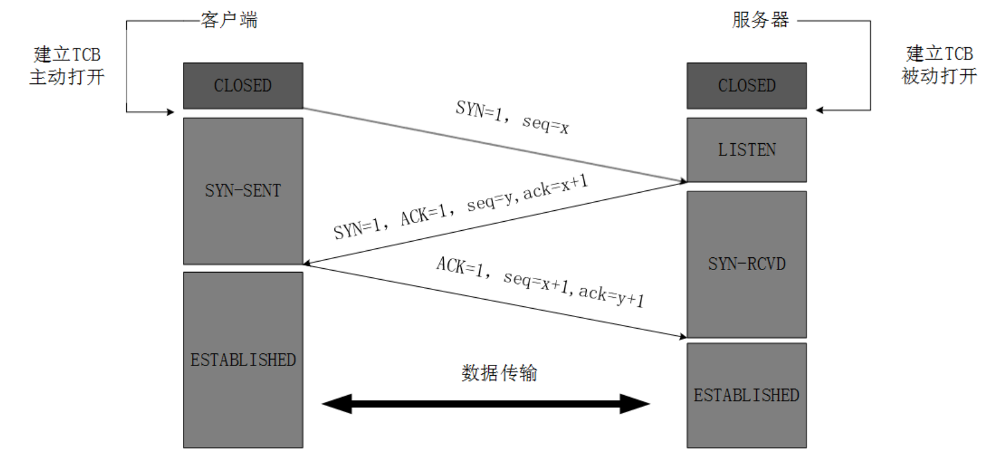
TCP服务器进程先创建传输控制块TCB，时刻准备接受客户进程的连接请求，此时服务器就进入了LISTEN（监听）状态；
TCP客户进程也是先创建传输控制块TCB，然后向服务器发出连接请求报文，这是报文首部中的同部位SYN=1，同时选择一个初始序列号 seq=x ，此时，TCP客户端进程进入了 SYN-SENT（同步已发送状态）状态。TCP规定，SYN报文段（SYN=1的报文段）不能携带数据，但需要消耗掉一个序号。
TCP服务器收到请求报文后，如果同意连接，则发出确认报文。确认报文中应该 ACK=1，SYN=1，确认号是ack=x+1，同时也要为自己初始化一个序列号 seq=y，此时，TCP服务器进程进入了SYN-RCVD（同步收到）状态。这个报文也不能携带数据，但是同样要消耗一个序号。
TCP客户进程收到确认后，还要向服务器给出确认。确认报文的ACK=1，ack=y+1，自己的序列号seq=x+1，此时，TCP连接建立，客户端进入ESTABLISHED（已建立连接）状态。TCP规定，ACK报文段可以携带数据，但是如果不携带数据则不消耗序号。
当服务器收到客户端的确认后也进入ESTABLISHED状态，此后双方就可以开始通信了。
为什么TCP客户端最后还要发送一次确认呢？
一句话，主要防止已经失效的连接请求报文突然又传送到了服务器，从而产生错误。
如果使用的是两次握手建立连接，假设有这样一种场景，客户端发送了第一个请求连接并且没有丢失，只是因为在网络结点中滞留的时间太长了，由于TCP的客户端迟迟没有收到确认报文，以为服务器没有收到，此时重新向服务器发送这条报文，此后客户端和服务器经过两次握手完成连接，传输数据，然后关闭连接。此时此前滞留的那一次请求连接，网络通畅了到达了服务器，这个报文本该是失效的，但是，两次握手的机制将会让客户端和服务器再次建立连接，这将导致不必要的错误和资源的浪费。
如果采用的是三次握手，就算是那一次失效的报文传送过来了，服务端接受到了那条失效报文并且回复了确认报文，但是客户端不会再次发出确认。由于服务器收不到确认，就知道客户端并没有请求连接。
TCP连接的释放（四次挥手）
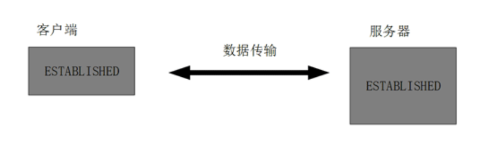
数据传输完毕后，双方都可释放连接。
最开始的时候，客户端和服务器都是处于ESTABLISHED状态，然后客户端主动关闭，服务器被动关闭。
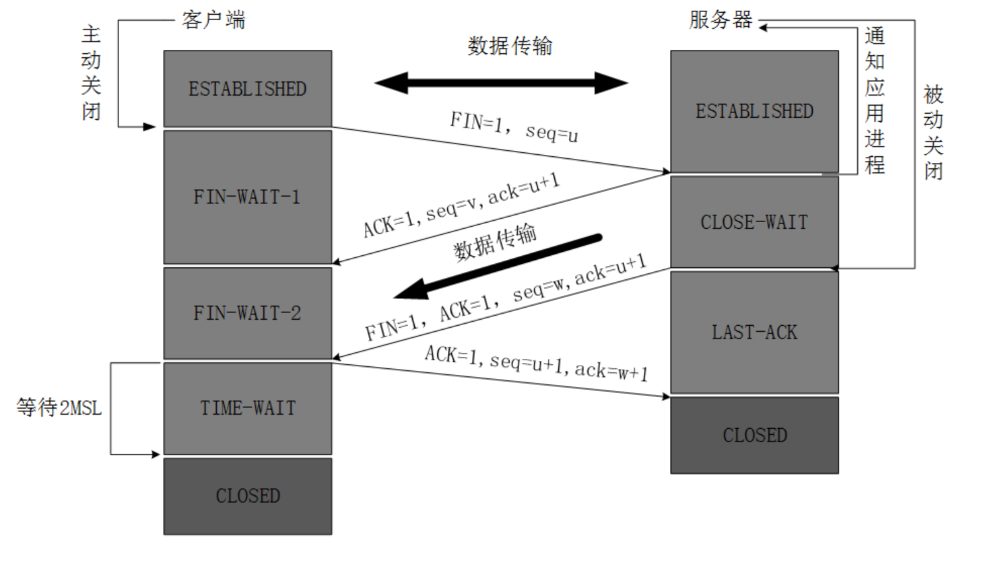
客户端进程发出连接释放报文，并且停止发送数据。释放数据报文首部，FIN=1，其序列号为seq=u（等于前面已经传送过来的数据的最后一个字节的序号加1），此时，客户端进入FIN-WAIT-1（终止等待1）状态。 TCP规定，FIN报文段即使不携带数据，也要消耗一个序号。
服务器收到连接释放报文，发出确认报文，ACK=1，ack=u+1，并且带上自己的序列号seq=v，此时，服务端就进入了CLOSE-WAIT（关闭等待）状态。TCP服务器通知高层的应用进程，客户端向服务器的方向就释放了，这时候处于半关闭状态，即客户端已经没有数据要发送了，但是服务器若发送数据，客户端依然要接受。这个状态还要持续一段时间，也就是整个CLOSE-WAIT状态持续的时间。
客户端收到服务器的确认请求后，此时，客户端就进入FIN-WAIT-2（终止等待2）状态，等待服务器发送连接释放报文（在这之前还需要接受服务器发送的最后的数据）。
服务器将最后的数据发送完毕后，就向客户端发送连接释放报文，FIN=1，ack=u+1，由于在半关闭状态，服务器很可能又发送了一些数据，假定此时的序列号为seq=w，此时，服务器就进入了LAST-ACK（最后确认）状态，等待客户端的确认。
客户端收到服务器的连接释放报文后，必须发出确认，ACK=1，ack=w+1，而自己的序列号是seq=u+1，此时，客户端就进入了TIME-WAIT（时间等待）状态。注意此时TCP连接还没有释放，必须经过2 *MSL（最长报文段寿命）的时间后，当客户端撤销相应的TCB后，才进入CLOSED状态。
服务器只要收到了客户端发出的确认，立即进入CLOSED状态。同样，撤销TCB后，就结束了这次的TCP连接。可以看到，服务器结束TCP连接的时间要比客户端早一些。
为什么客户端最后还要等待2MSL？
MSL（Maximum Segment Lifetime），TCP允许不同的实现可以设置不同的MSL值。
第一，保证客户端发送的最后一个ACK报文能够到达服务器，因为这个ACK报文可能丢失，站在服务器的角度看来，我已经发送了FIN+ACK报文请求断开了，客户端还没有给我回应，应该是我发送的请求断开报文它没有收到，于是服务器又会重新发送一次，而客户端就能在这个2MSL时间段内收到这个重传的报文，接着给出回应报文，并且会重启2MSL计时器。
第二，防止类似与“三次握手”中提到了的“已经失效的连接请求报文段”出现在本连接中。客户端发送完最后一个确认报文后，在这个2MSL时间中，就可以使本连接持续的时间内所产生的所有报文段都从网络中消失。这样新的连接中不会出现旧连接的请求报文。
为什么建立连接是三次握手，关闭连接确是四次挥手呢？
建立连接的时候， 服务器在LISTEN状态下，收到建立连接请求的SYN报文后，把ACK和SYN放在一个报文里发送给客户端。 而关闭连接时，服务器收到对方的FIN报文时，仅仅表示对方不再发送数据了但是还能接收数据，而自己也未必全部数据都发送给对方了，所以己方可以立即关闭，也可以发送一些数据给对方后，再发送FIN报文给对方来表示同意现在关闭连接，因此，己方ACK和FIN一般都会分开发送，从而导致多了一次。
如果已经建立了连接，但是客户端突然出现故障了怎么办？
TCP还设有一个保活计时器，显然，客户端如果出现故障，服务器不能一直等下去，白白浪费资源。服务器每收到一次客户端的请求后都会重新复位这个计时器，时间通常是设置为2小时，若两小时还没有收到客户端的任何数据，服务器就会发送一个探测报文段，以后每隔75秒发送一次。若一连发送10个探测报文仍然没反应，服务器就认为客户端出了故障，接着就关闭连接。